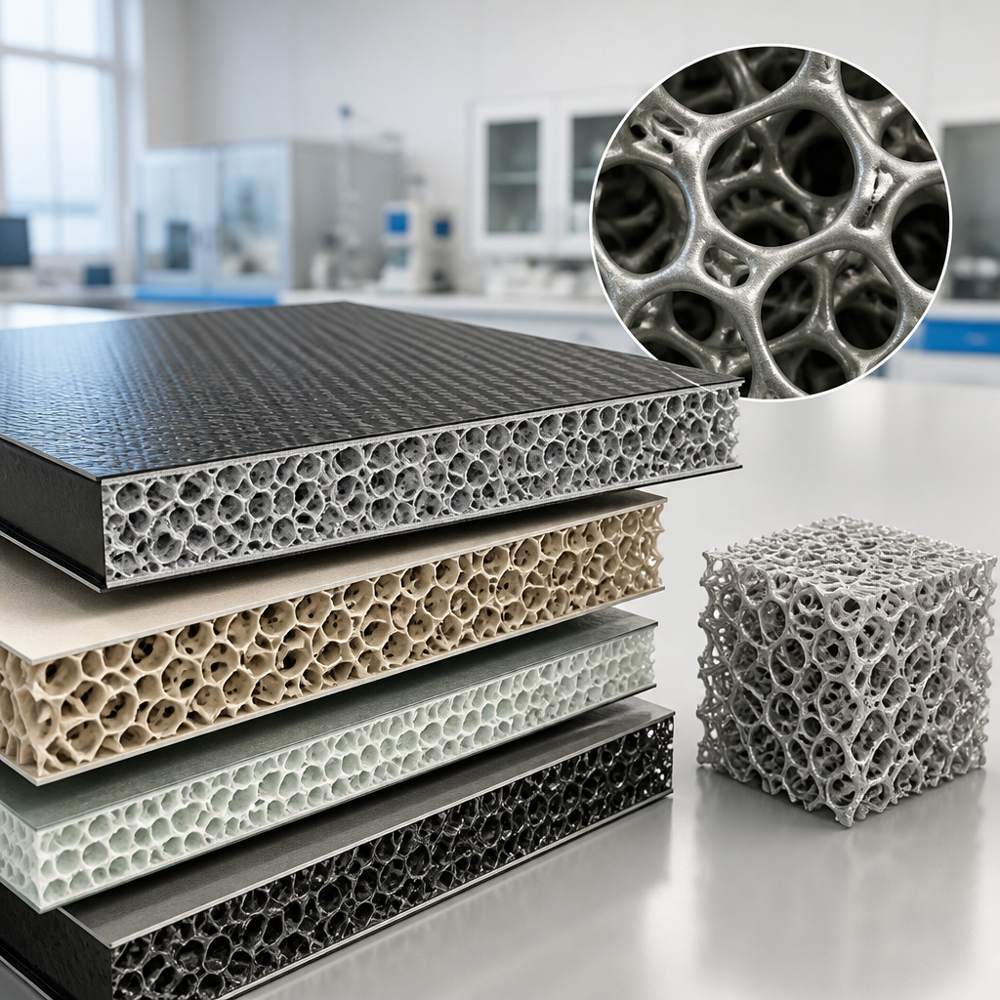
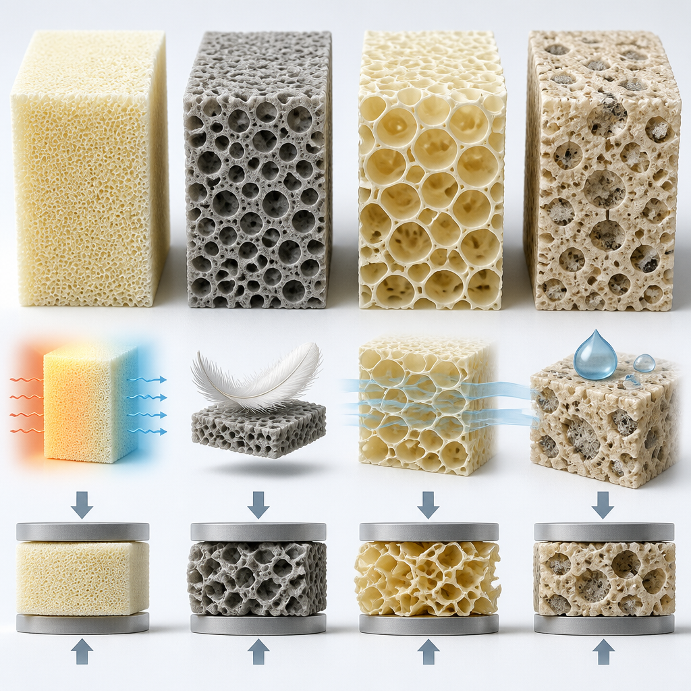

Il CNR partecipa a un progetto europeo per sviluppare materiali espansi multifunzionali, sensorizzati e riciclabili.
Una nuova generazione di materiali polimerici sostenibili è al centro di ReLION, progetto finanziato nell’ambito del programma europeo Horizon 2020. Il Consiglio Nazionale delle Ricerche contribuisce alle attività del progetto insieme a un consorzio di partner italiani ed europei. L’obiettivo indicato è trasformare la ricerca sui materiali avanzati in soluzioni tecnologiche per la transizione ecologica e per l’industria del futuro.
Il progetto si concentra su materiali espansi: materiali con una struttura interna porosa, detta anche a schiuma. In particolare, ReLION punta a realizzare schiume composite smart-NIPU. Composite significa formate da più componenti; smart-NIPU identifica i materiali oggetto delle attività di progettazione, sintesi e caratterizzazione coordinate per il CNR dall’Istituto di Struttura della Materia.
Le schiume che il progetto intende sviluppare dovrebbero essere innovative, multifunzionali, sensorizzate e riciclabili. Per materiali sensorizzati si intendono materiali progettati con capacità di rilevazione. La ricerca guarda a possibili applicazioni nei settori dell’aeromobile e dell’edilizia, con l’intento di offrire un’alternativa più sicura e sostenibile rispetto ai materiali espansi tradizionali di origine fossile.
La progettazione segue i principi della progettazione sicura e sostenibile fin dall’origine: un approccio che considera insieme sicurezza e sostenibilità nello sviluppo dei materiali. ReLION richiama inoltre nel proprio nome l’uso di poliuretani non isocianati rinnovabili e l’innovazione basata su risorse biologiche. Il progetto colloca così la scelta dei materiali, la loro struttura e le prospettive di riutilizzo all’interno dello stesso percorso di ricerca.

Per il CNR, l’Istituto di Struttura della Materia coordina le attività di progettazione, sintesi e caratterizzazione delle schiume composite smart-NIPU. La sintesi è la fase di realizzazione del materiale; la caratterizzazione serve a osservarne e valutarne le proprietà. La responsabilità scientifica di queste attività per CNR-ISM e CNR-IPCB è affidata a Letizia Verdolotti.
«L’obiettivo è comprendere come la composizione e la struttura delle schiume influenzino le proprietà come isolamento, leggerezza e comportamento meccanico. La caratterizzazione dei nuovi materiali ci permetterà di orientarne lo sviluppo verso le esigenze dei diversi settori e di contribuire alla verifica della loro possibilità di riciclo e riutilizzo», afferma Letizia Verdolotti, di Cnr-Ism.
Isolamento, leggerezza e comportamento meccanico sono quindi le proprietà considerate nella ricerca. Il comportamento meccanico descrive il modo in cui un materiale risponde alle sollecitazioni. Studiare il rapporto tra composizione, struttura e proprietà permetterà di orientare lo sviluppo delle schiume in funzione delle esigenze dei diversi settori indicati dal progetto.
Il coordinamento del progetto è affidato all’Università degli studi di Napoli Federico II. Tra i partner figurano il Consiglio Nazionale delle Ricerche, ABo Akademi, Ritols Sia, Universidad De Castilla - La Mancha, Geven SPA, CENTITVC - Centro de Nanotecnologiae Materiais e Fraunhofer Gesellschaft zur Forderung Der Ang. È associato anche l’Istituto Nazionale Assicurazione Infortuni sul lavoro.
ReLION è un progetto europeo dedicato a schiume composite sostenibili. Il CNR coordina per le proprie attività progettazione, sintesi e caratterizzazione dei materiali. La ricerca valuta come composizione e struttura influenzino isolamento, leggerezza e comportamento meccanico, anche in vista di riciclo e riutilizzo.
Questo articolo l'hai letto sul blog di Meteo News Radar: un'app che ti mostra da dove vengono i numeri, invece di limitarsi a dartelo. E ogni mattina ne trovi uno nuovo come questo.